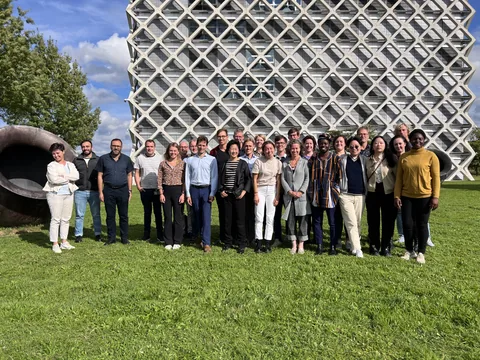
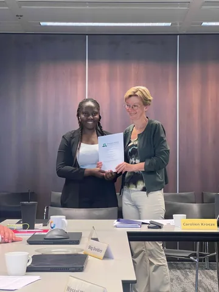
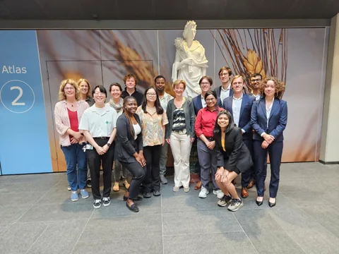

Leadership & Volunteering
Beyond my professional and academic work, these roles have strengthened my leadership, collaboration, critical thinking, stakeholder engagement and communication skills.
Member, Student Council
Wageningen UniversityRevived a proposal for mandatory intercultural communication training for students in diverse project teams.
View contributions
Representing students, championing ideas
My Student Council board year was a highlight of my MSc. I joined to represent student interests in university policymaking and discovered the opportunity to initiate ideas for change.
My proudest contribution was reviving a proposal for mandatory intercultural communication training to help students navigate cultural differences in diverse project teams. Working with Gargi Pravin Kubde, fellow council members, Eva Meijer and Birgit Boogaard, I helped bring renewed attention to the initiative and its potential to strengthen collaboration.
As a council member, I served on the WUR Council Daily Board, the Student Council Daily Board and the Public Relations Team.
Student Council moments



Member, Governance Review Committee
International Society of City and Regional Planners (ISOCARP)Reviewed institutional policies, reports and contracts in a seven-member committee to recommend governance improvements.
View contributions
Institutional governance review
I contributed to a governance review assessing ISOCARP's organisational standing and identifying opportunities for improvement and future growth. As part of a seven-member committee, I supported a comprehensive review of institutional policies, reports, contracts and other governance-related documents to identify areas requiring change.
Committee coordination
I also supported the committee's coordination by documenting meeting minutes, tracking action points and following up on agreed activities.
ISOCARP websiteParty Chair
Christian Student Faction (CSF)Led the faction's organisation, communications and budget, and redesigned its website.
View contributions
Leadership and representation
I led the student faction's organisational activities, stakeholder engagement and public communications. I maintained relationships with student associations and other university stakeholders, representing the faction at university, municipal and constituency events.
Communication and student engagement
I strengthened the faction's visibility by redesigning its website to communicate its values, mission and opportunities more clearly. I also organised engagement activities, including informal coffee chats that enabled students to interact directly with faction representatives and raise questions.
Budget management
I oversaw the faction's budget and expenditure, including election-related activities, promotional materials and other operational expenses.
CSF websiteMember, Music Selection Committee (MuCie)
Wageningen Studentenkoor en Orkest Vereniging (WSKOV)Selected concert repertoire for two seasons with fellow committee members.
View contributions
Repertoire selection
I served on the Music Selection Committee, contributing to the selection of musical repertoire for two concert seasons. I collaborated with fellow committee members to review and select pieces for upcoming performances.
WSKOV website